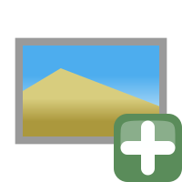
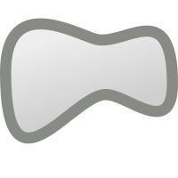
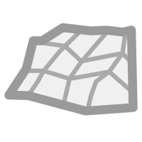
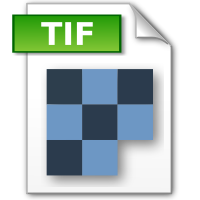
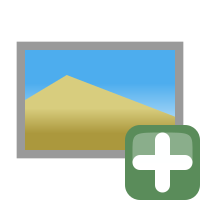
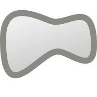

Dette er en enkel ressursside for kurset "Georeferering og digitalisering i QGIS"
Den orginale hogstmeldingen (.pdf-format)
Dette er det orginale dokumentet.
Hogstmeldingen i tabellform (.xlsl-format)
Informasjon fra hogstmeldingskjema skrevet inn i en tabell.
Poppler for windows (.exe-program)
Kommandolinjeprogram for å konvertere .pdf-filer til bildefiler, eller ta ut bildefiler fra .pdf-filer. Programmet krever ikke noen installasjon.

Kartdokumenter konvertert til bildeformat (.png-format)
Dette er høyoppløslige bilder hentet ut av .pdf-filen. Bruk disse om du ikke får til Poppler.
Punkter i terrenget (.shp-format)
Punkter i terrenget som er lett gjennkjennelig kan markeres.
Kontrollpunkter (.points-format)
Disse punktene markerer samme området med ett koordinat i terrenget og et tilsvarende koordinat i kartbildet.
Georefererte kartdokument (.png-format, med .wld-sidefiler)
Kartdokumetnene ferdig georeferert. Kan lastes direkte inn i QGIS.
Rapport for georeferering (.pdf-format)
Rapporten viser nøyaktigheten til georefereringsprosessen.

Skjemdigitaliserte hogstmeldinger uten egenskapstabell (.shp-format)
Her er flatene tegnet av og lagret som et vektorformat.
Skjemdigitaliserte hogstmeldinger i forskjellige formater
Her er tabellinformasjonen lagt til flatene. Vektorene er også konvertert til å kunne brukes i Google Earth (.kml), OryxMaps (.kml) og OsmAnd (.gpx). Shapefilen er også farglagt med hjelp av en .sld-fil.
Kartdokument (Georeferert .pdf-fil)
Ferdig kartdokument. Dette er en georeferert .pdf-fil og Kan åpnes i QGIS og Avenza Maps

Bakgrunnskart (Alternativ til WMS-tjeneste)
Det hender at WMS-tjenestene ikke fungerer for enkelte brukere.
Det kan være mange grunner til dette, og kursleder er desverre ingen ekspert når det kommer til WMS-tjenester.
Grunnen til at en tjenesten ikke fungerer er nok oftest konflikt med brannmur og sikkerhetsinnstillinger på brukerens pc.
Jeg har derfor tatt meg den frihet å hente bakgrunnskartene og lagre dem til tre forskjellige formater.
Last dem ned, og pakk dem ut.
Alle skal være mulige å åpne direkte i QGIS ved drag and drop metoden.
Bakgrunnskart (.pdf)
Kan dras rett inn i QGIS.
Bakgrunnskart (.png)
Georeferete bakgrunnskart i .png-format.

Bakgrunnskart (.tif)
Kan dras rett inn i QGIS.
 Tid og sted
Tid og sted
Trykk her for å gå til evalueringsskjema.
Flyer for Georeferering og digitalisering i QGIS (.pdf)
 Anders Johan Konnestad
Anders Johan Konnestad
Dette er det orginale dokumentet.Hogstmeldingen i tabellform (.xlsl-format)
Informasjon fra hogstmeldingskjema skrevet inn i en tabell.Poppler for windows (.exe-program)
Kommandolinjeprogram for å konvertere .pdf-filer til bildefiler, eller ta ut bildefiler fra .pdf-filer. Programmet krever ikke noen installasjon. Kartdokumenter konvertert til bildeformat (.png-format)
Dette er høyoppløslige bilder hentet ut av .pdf-filen. Bruk disse om du ikke får til Poppler.Punkter i terrenget (.shp-format)
Punkter i terrenget som er lett gjennkjennelig kan markeres.Kontrollpunkter (.points-format)
Disse punktene markerer samme området med ett koordinat i terrenget og et tilsvarende koordinat i kartbildet.Georefererte kartdokument (.png-format, med .wld-sidefiler)
Kartdokumetnene ferdig georeferert. Kan lastes direkte inn i QGIS.Rapport for georeferering (.pdf-format)
Rapporten viser nøyaktigheten til georefereringsprosessen. Skjemdigitaliserte hogstmeldinger uten egenskapstabell (.shp-format)
Her er flatene tegnet av og lagret som et vektorformat.Skjemdigitaliserte hogstmeldinger i forskjellige formater
Her er tabellinformasjonen lagt til flatene. Vektorene er også konvertert til å kunne brukes i Google Earth (.kml), OryxMaps (.kml) og OsmAnd (.gpx). Shapefilen er også farglagt med hjelp av en .sld-fil.Kartdokument (Georeferert .pdf-fil)
Ferdig kartdokument. Dette er en georeferert .pdf-fil og Kan åpnes i QGIS og Avenza Maps